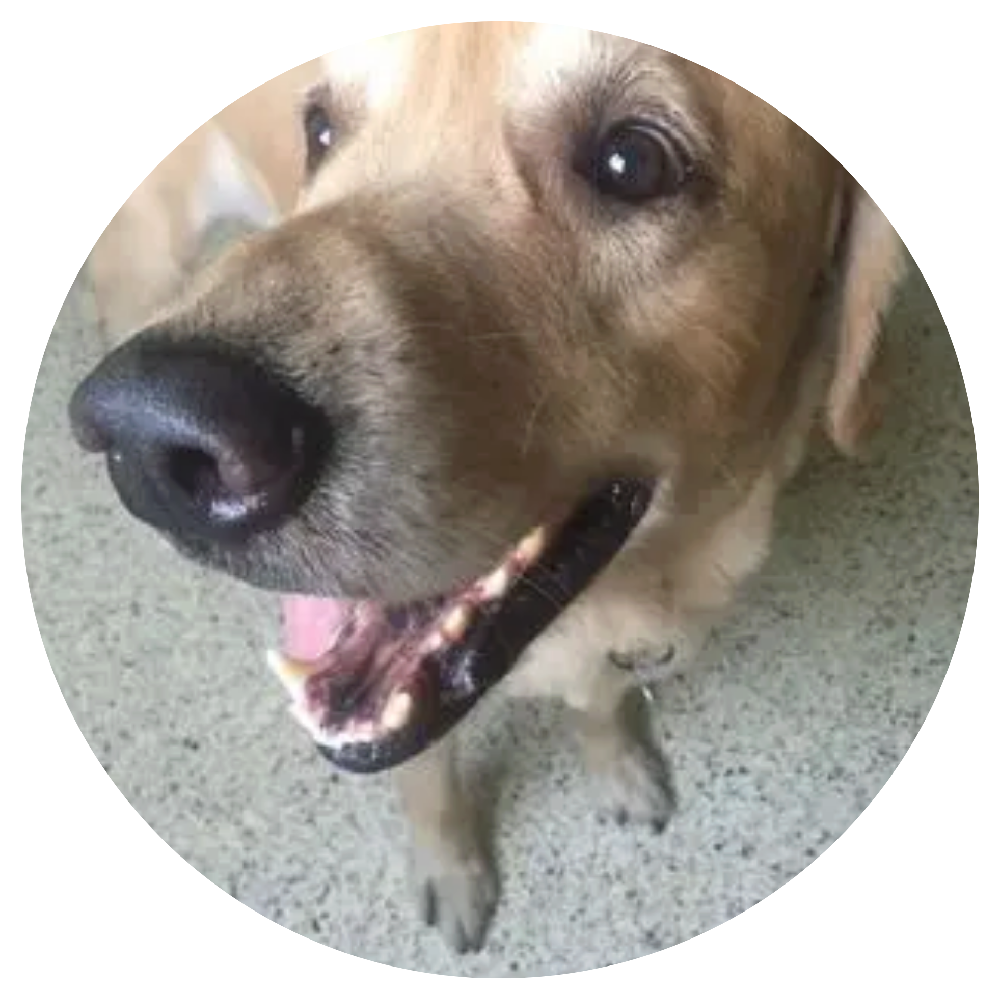

Tobi
Tobi era un perro juguetón y curioso que adora correr en la cancha de futbol. Era muy leal y siempre está atento a lo que hago.Ni me dejaba cuando hiba en la secundaria, aun lo extraño. Te quiero Tobi fuiste un amor en vida 🦴.

Pirata
Pirata es igual de alocado, le gusta irse de casa y volver tarde, un dato interesante es que uno de sus ojos es de color blanco 🐶.